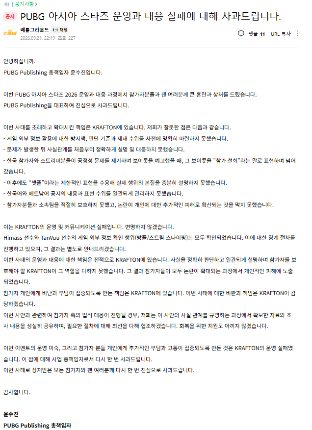

안녕하십니까.
PUBG Publishing 총책임자 윤수진입니다.
이번 PUBG 아시아 스타즈 2026 운영과 대응 과정에서 참가자분들과 팬 여러분께 큰 혼란과 상처를 드렸습니다.
PUBG Publishing을 대표하여 진심으로 사과드립니다.
이번 사태를 초래하고 확대시킨 책임은 KRAFTON에 있습니다. 저희가 잘못한 점은 다음과 같습니다.
- 게임 외부 정보 활용에 대한 방지책, 판단 기준과 제재 수위를 사전에 명확히 마련하지 못했습니다.
- 문제가 발생한 뒤 사실관계를 처음부터 정확하게 설명 및 대응하지 못했습니다.
- 한국 참가자와 스트리머분들이 공정성 문제를 제기하며 보이콧을 예고했을 때, 그 보이콧을 "참가 철회"라는 말로 표현하며 넘어갔습니다.
- 이후에도 “챗플”이라는 제한적인 표현을 수용해 실제 행위의 본질을 충분히 설명하지 못했습니다.
- 한국어와 베트남어 공지의 내용과 표현 수위를 일관되게 관리하지 못했습니다.
- 참가자분들과 소속팀을 적절히 보호하지 못했고, 논란이 개인에 대한 추가적인 피해로 확산되는 것을 막지 못했습니다.
이는 KRAFTON의 운영 및 커뮤니케이션 실패입니다. 변명하지 않겠습니다.
Himass 선수와 TanVuu 선수의 게임 외부 정보 확인 행위(방플/스트림 스나이핑)는 모두 확인되었습니다. 이에 대한 징계 절차를 진행하고 있으며, 그 결과는 별도로 안내드리겠습니다.
이번 사태의 운영과 대응에 대한 책임은 전적으로 KRAFTON에 있습니다. 사실을 정확히 판단하고 일관되게 설명하며 참가자를 보호해야 할 KRAFTON이 그 역할을 다하지 못했습니다. 그 결과 참가자들이 모두 논란이 확대되는 과정에서 개인적인 피해에 노출되었습니다.
참가자 개인에게 비난과 부담이 집중되도록 만든 책임은 KRAFTON에 있습니다. 이번 사태에 대한 비판과 책임은 KRAFTON이 감당하겠습니다.
이번 사안과 관련하여 참가자 측의 법적 대응이 진행될 경우, 저희는 이 사안의 사실 관계를 규명하는 과정에서 확보한 자료와 조사 내용을 성실히 공유하며, 필요한 절차에 대해 최선을 다해 협조하겠습니다. 회복을 위한 지원도 아끼지 않겠습니다.
이번 이벤트의 운영 미숙, 그리고 참가자 분들 개인에게 추가적인 부담과 고통이 집중되도록 만든 것은 KRAFTON의 운영 실패였습니다. 이 점에 대해 사업 총책임자로서 다시 한 번 사과드립니다.
이번 사태로 상처받은 모든 참가자와 팬 여러분께 다시 한 번 진심으로 사과드립니다.
감사합니다.
윤수진
PUBG Publishing 총책임자

총책임자라는 사람이 개인에 대한 사이버불링 좌표찍기와 집단적,폭언,욕설,성희롱,딥페이크는 끝까지 언급도 안함.
작성자 찐따 냄새 심하게 난다
뭘 얘기하고 싶은지는 알겠는데 볼드체에 빨간 글씨가 너무 노골적이라 역하다